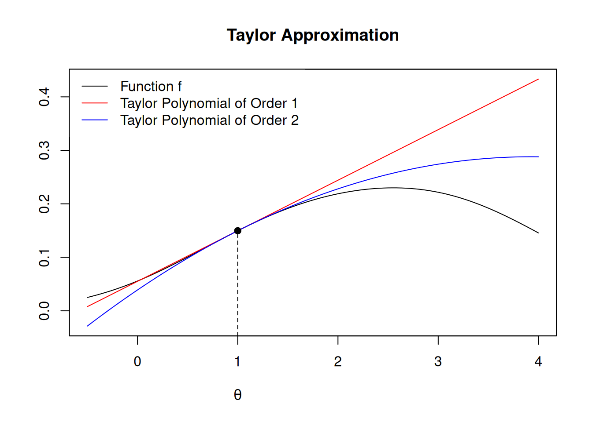
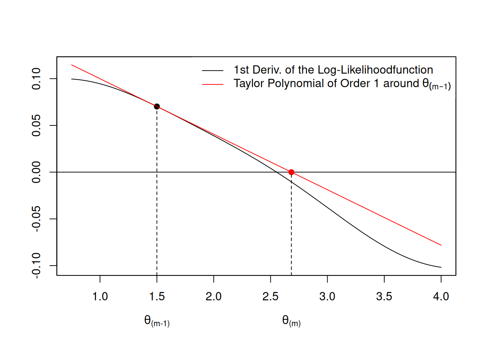

1 Maximum Likelihood
1.1 Introduction: The Likelihood Principle
The basic idea behind maximum likelihood estimation is very simple: Assume that the data is generated by some distribution with a certain (finite) set of unknown distribution parameters (e.g., the normal distribution with unknown mean and variance). Then find the distribution parameters for which it is most likely that the distribution has generated the data we actually observed.
In (classic) maximum likelihood estimation we must be rather specific about the process that generated the data. This is a trade-off: by imposing a fair amount of structure on the data, we get in return a very desirable estimator. The question remains, however, whether we have made the right decision about the general distribution/density function family.
1.1.1 Properties of Maximum Likelihood Estimators
Why do we like maximum likelihood as an estimation method? The answer is that: A maximum likelihood estimator \(\hat\theta_n\) of some parameter, e.g. \(\theta_0\in\mathbb{R}\), is
- Consistent:
\[ \hat\theta_n\rightarrow_p\theta_0,\quad n\to\infty \] - Asymptotically normal: \[ \sqrt{n}(\hat\theta_n-\theta_0) \stackrel{a}{\sim} \mathcal{N}(0, \sigma^2) \]
- Asymptotically efficient: This means that no other consistent estimator has a lower asymptotic mean squared error than the maximum likelihood estimator.
Likewise for multivariate parameter \(\theta_0\in\mathbb{R}^p.\)
Thus, maximum likelihood estimators can be very appealing, provided that the assumption on the general distribution family is correct.
ML-estimation requires fixing the family of distributions \(f(\cdot;\theta)\)
Let \[ X_1,\dots,X_n \] denote a (i.i.d.) random sample, such that \(X_i\overset{\text{i.i.d.}}{\sim} f\), for all \(i=1,\dots,n.\)
Classic ML-estimation requires us to fix the general family of density functions or probability mass functions \(f,\) where \(f\) is known up to an unknown parameter value \(\theta_0,\) and where \(\theta_0\in\mathbb{R}^K\) is a finite (\(1\leq K<\infty\)) dimensional parameter vector.
Examples:
- \(f\) being the probability mass function of the Bernoulli distribution \(\mathcal{Bern}(\theta)\) with \[ f(x;\theta_0)= \left\{ \begin{array}{ll} \theta_0, & \text{if } x=1\\ 1-\theta_0, & \text{if } x=0 \end{array} \right. \] and unknown parameter \(0\leq \theta\leq 1.\)
- The density function of the exponential distribution \[ f(x;\theta_0)=\left\{ \begin{matrix} \theta_0\exp(- \theta_0 x)& \text{for }x\geq 0\\ 0 & \text{for }x < 0\\ \end{matrix}\right. \] with unknown rate parameter \(\theta_0>0\) and \(x\in\mathbb{R}.\)
- \(f\) is the normal density \[ f(x;\theta_0)=\frac{1}{\sigma\sqrt{2\pi}}\exp\left(-\frac{1}{2}\left(\frac{x-\mu_0}{\sigma_0}\right)^2\right) \] with unknown parameter vector \(\theta_0=(\mu_0,\sigma_0^2)^T\) and \(x\in\mathbb{R}.\)
This requirement (fixing the family of density functions) can be overly restrictive. In many applications we typically do not know the family of \(f.\) To address this issue, the quasi maximum likelihood theory generalizes classic maximum likelihood estimation to cases where \(f\) is misspecified (see White (1982)).
1.1.2 Example: Coin Flipping (Bernoulli Trial)
To introduce the main idea of maximum likelihood estimation, we use the simple example of a coin flipping experiment, where a possibly unfair \(\text{Coin}\) can take the value \(H\) (Head) or \(T\) (Tail), \[ \text{Coin}\in\{H,T\}. \] Such coin-flips can be modeled using Bernoulli random variables \[ X\sim\mathcal{Bern}(\theta_0) \] where \[ X=\left\{ \begin{matrix} 1 & \text{if } \text{Coin}=H\\[2ex] 0 & \text{if } \text{Coin}=T \end{matrix} \right. \] The probability mass function of the Bernoulli distribution \(\mathcal{Bern}(\theta_0),\) with unknown probability of success parameter \(0<\theta_0<1,\) is given by \[ f(x;\theta_0)= \left\{ \begin{array}{ll} \theta_0,&\text{if } x=1\\ 1-\theta_0, & \text{if } x=0 \end{array} \right. \] I.e., the probability that we get Head \(H\) is \[ \theta_0 = f(1;\theta_0) = P(X=1) = P(\text{Coin}=H), \] and the probability that we get Tail \(T\) is \[ 1-\theta_0 = f(0;\theta_0) = P(X=0) = P(\text{Coin}=T). \]
Our goal is to estimate the unknown \(\theta_0\) using a random (i.i.d.) sample of size \(n\) \[ \{X_1,\dots,X_n\} \] with \[ X_i=\left\{ \begin{matrix} 1 & \text{if } \text{Coin}=H\text{ in $i$th coin flip}\\[2ex] 0 & \text{if } \text{Coin}=T\text{ in $i$th coin flip} \end{matrix} \right. \] such that \[ X_i\overset{\text{i.i.d.}}{\sim}\mathcal{Bern}(\theta_0),\quad i=1,\dots,n. \]
A given observed realization of the random sample \[ \{X_{1,obs},X_{2,obs},\dots,X_{n,obs}\}=\{0,1,\dots,0\} \] consists of \(0\leq N_{H,obs}\leq n\) \[ N_{H,obs}=\sum_{i=1}^n X_{i,obs} \] many heads and \[ 0\leq n-N_{H,obs} \leq n \] many tails.
The (Log-)Likelihood Function
How do we combine the information from the \(n\) observations \[ \{X_{1,obs},\dots,X_{n,obs}\} \] to estimate the unknown \(\theta_0\)?
If the observations are realizations of an i.i.d. sample, then the joint probability of observing \(h\) heads \(H\) and \(n-h\) tails \(T\) in \(n\) coin flips is: \[ \begin{align*} \mathcal{L}_{n,obs}(\theta) &=\prod_{i=1}^nf(X_{i,obs};\theta)\\[2ex] %&=\left(P(X=1)\right)^{N_{H,obs}}\left(P(X=0)\right)^{n-N_{H,obs}}\\[2ex] %&= \theta^{N_{H,obs}}(1-\theta)^{n-N_{H,obs}} \\[2ex] &= \prod_{i=1}^n \theta^{X_{i,obs}}(1-\theta)^{1-X_{i,obs}}, \end{align*} \] where \(f(\,\cdot\,;\theta)\) denotes here the probability mass function of the Bernoulli distribution with parameter candidate \(p=\theta.\)
The function \(\mathcal{L}_n(\theta)\) is called the likelihood function. The likelihood function depends on the random sample and is thus itself random. If we want to emphasize that we look at a given realization, we write \(\mathcal{L}_{,obs}(\theta)\).
1.1.3 Estimation Idea
We estimate the unknown parameter \(\theta_0\) by maximizing the likelihood of the observed data \(\{X_{1,obs},\dots,X_{n,obs}\}\) over the range of possible parameter values.
- The value \(\hat\theta_{ML}\) at which the likelihood function \(\mathcal{L}_n(\cdot)\) is maximized is called the maximum likelihood (ML) estimator
- The value \(\hat\theta_{ML,obs}\) at which the observed likelihood function \(\mathcal{L}_{n,obs}(\cdot)\) is maximized is called the maximum likelihood (ML) estimate; i.e., \(\hat\theta_{ML,obs}\) is a specific realization of the ML-estimator computed from the observed data \(\{X_{1,obs},\dots,X_{n,obs}\}.\)
Thus, to derive the estimator for the unknown \(\theta_0\) in our coin flip example, we need to maximize the likelihood function, \[ \begin{align*} \hat{\theta}_{ML} &=\arg\max_{\theta\in[0,1]} \mathcal{L}_n(\theta)\\[2ex] &=\arg\max_{\theta\in[0,1]} \prod_{i=1}^n f(X_{i};\theta)\\[2ex] &=\arg\max_{\theta\in[0,1]} \prod_{i=1}^n \theta^{X_{i}}(1-\theta)^{1-X_{i}}. \end{align*} \]
Usually it’s easier to work with sums rather than products—also for doing the asymptotics in Section 1.4. So we apply a monotonic transformation by taking the logarithm of the likelihood which leads to the log-likelihood function: \[ \begin{align*} \ell_n(\theta) &=\ln\mathcal{L}_n(\theta)\\[2ex] &=\ln\prod_{i=1}^n f(X_{i};\theta)\\[2ex] &=\sum_{i=1}^n \ln f(X_{i};\theta). \end{align*} \] Since this is only a monotonic transformation, we have that \[ \begin{align*} \hat\theta_{ML} &=\arg\max_{\theta\in\Theta} \mathcal{L}_n(\theta)\\[2ex] &=\arg\max_{\theta\in\Theta} \ell_n(\theta). \end{align*} \]
Log-likelihoods instead of the likelihoods
From a standpoint of computational complexity, you can imagine that summing is less expensive than multiplication (although nowadays, these are almost equal).
More important: likelihoods would become very small and you will run out of your floating point precision very quickly, yielding an underflow. That’s why it is way more convenient to use the logarithm of the likelihood. Simply try to calculate the likelihood by hand, using pocket calculator—it’s almost impossible.
In our coin flipping example, taking the natural logarithm yields, \[ \begin{align*} \mathcal{L}_n(\theta) &= \prod_{i=1}^n \theta^{X_{i}}(1-\theta)^{1-X_{i}} \\[2ex] \Rightarrow\quad \ell_n(\theta) &=\ln\mathcal{L}_n(\theta)\\[2ex] &=\sum_{i=1}^n\left( X_{i} \ln(\theta) + (1-X_{i})\ln(1-\theta)\right). \end{align*} \]
The coin flip example is actually so simple that we can maximize \(\ell_n(\theta)\) analytically. Computing the first derivative yields \[ \begin{align*} \ell'_n(\theta)&=\sum_{i=1}^n \left(X_{i}\dfrac{1}{\theta} - (1-X_{i})\dfrac{1}{1-\theta}\right)\\[2ex] &=\dfrac{N_{H}}{\theta} - \dfrac{n-N_{H}}{1-\theta} \end{align*} \] Setting the first derivative to zero determines the maximum likelihood estimator (MLE) \(\hat\theta_{ML}\): \[ \begin{array}{rrcl} &\ell_n'(\hat\theta_{ML})&\overset{!}{=}&0\\[2ex] \Leftrightarrow&\dfrac{N_{H}}{\hat\theta_{ML}} &=& \dfrac{n-N_{H}}{1-\hat\theta_{ML}} \\[2ex] \Leftrightarrow&N_{H}-N_{H}\hat\theta_{ML} &=& n\hat\theta_{ML}-N_{H}\hat\theta_{ML}\\[2ex] \Leftrightarrow&\hat\theta_{ML} &=&\dfrac{N_{H}}{n}\\[2ex] &&=&\dfrac{1}{n}\sum_{i=1}^n X_i \end{array} \tag{1.1}\]
Given observed data \(\{X_{1,obs},\dots,X_{n,obs}\},\) a specific estimate of \(\theta_0\) can thus be computed as \[ \begin{align*} \hat{\theta}_{ML,obs}=\dfrac{1}{n}\sum_{i=1}^n X_{i,obs}. \end{align*} \]
Usually, however, the log-likelihood function is way more complicated such that it is impossible to derive an explicit expression for the ML-estimator \(\hat\theta_{ML}.\) In such cases, one needs to apply numeric optimization algorithms to compute the ML-estimates, \(\hat\theta_{ML,obs}.\)
1.2 Numeric Optimization
Usually, we are not so fortunate as to have an analytical solution for the MLE, and must rely on the computer to find the maximizing arguments of the log-likelihood function. Various methods exist for finding the maximum (or minimum) of a function.
General idea: Try to find the root of \(\ell'\)
- Start at some value, \(\theta_{(0)},\) in the parameter space \(\Theta.\)
- Search across the parameter space \(\Theta\) using a step-wise procedure \[ \theta_{(0)},\theta_{(1)},\dots,\theta_{(m)} \] until an updated parameter value \(\theta_{(m)}\) is found that yields a derivative of the log likelihood that is effectively zero (i.e. smaller than some convergence/stopping criterion), \[ \ell'(\theta_{(m)})\approx 0. \]
1.2.1 Newton-Raphson Optimization
One of the most-used methods for optimization is the Newton-Raphson method (or a variant of it). The Newton-Raphson method relies on Taylor-series approximations of the log-likelihood function.
In the following, we consider the univariate case \(\theta\in\mathbb{R}.\) However, the multivariate case \(\theta\in\mathbb{R}^K\) is treated likewise, but requires substituting first derivatives by gradients, second derivatives by the Hessian, etc.
Note
Minimization and maximization are essentially the same problems, since minimizing a function \(f(x)\) with respect to \(x\) is equivalent to maximizing \(-f(x)\) with respect to \(x.\)
Let \(f\) be a two times differentiable function to be optimized (here maximized). The first- and second-order Taylor-series approximations of \(f\) around the point \(\theta\) are: \[ \begin{align*} \text{First-order:}\quad &f(\theta+h)\approx \overbrace{f(\theta)+f'(\theta)h}^{\text{Taylor Polynomial of order 1}} \\ \text{Second-order:}\quad& f(\theta+h)\approx \underbrace{f(\theta)+f'(\theta)h + \frac{1}{2} f''(\theta)h^2}_{\text{Taylor Polynomial of order 2}}, \end{align*} \] Locally, i.e. for \(|h|\approx 0,\) (e.g. \(h=\pm 0.04\)) the Taylor polynomials are very good approximations of \(f(\theta + h);\) see Figure 1.1.
Optimization Idea
Let \(\ell_n\) be a log-likelihood function with continuous first, \(\ell_n',\) and second, \(\ell_n'',\) derivative.
To optimize the log-likelihood function \(\ell_n,\) we try to find the root of \(\ell_n',\) i.e. the value of \(\theta\in\Theta\) such that \[ \ell_n'(\theta)=0. \] That is, we try to find the value of \(\theta\) that fulfills the first order condition of the optimization problem. We do so using a step-wise optimization approach, where each step has a smallish size \(h.\)
Initialization: Let \(\theta_{(0)}\in\Theta\) be our first guess of the root of \(\ell'_n.\)
\(h\)-Steps: Typically, our guess is not perfect and thus \(\ell_n'(\theta_{(0)})\neq 0.\) Therefore, we want to move from \(\theta_{(0)}\) to a new root-candidate \(\theta_{(1)}\) by doing an \(h\)-step update \[ \theta_{(1)} = \theta_{(0)} + h. \]
The first-order Taylor-series approximation of \(\ell_n'\) around our first guess \(\theta_{(0)}\) gives \[ \begin{align*} \ell_n'(\theta_{(0)} + h) & \approx \ell_n'(\theta_{(0)}) + \ell_n''(\theta_{(0)})h \end{align*} \] Thus, to find the \(h\)-step that brings us closer to the root of \(\ell_n',\) we can (approximatively) use the \(h\)-step that brings us to the root of its first-order approximation, i.e. \[ \begin{align*} \ell_n'(\theta_{(0)}) + \ell_n''(\theta_{(0)}) h_{(0)} = 0\\[2ex] \Rightarrow h_{(0)} = -\frac{\ell_n'(\theta_{(0)})}{\ell_n''(\theta_{(0)})}. \end{align*} \] Based on this \(h\)-step, the new root-candidate is \[ \begin{align*} \theta_{(1)} & = \theta_{(0)} + h_{(0)}\\[2ex] & = \theta_{(0)} - \frac{\ell_n'(\theta_{(0)})}{\ell_n''(\theta_{(0)})}. \end{align*} \] Likewise, the \(m\)th root-candidate is \[ \begin{align*} \theta_{(m)} & = \theta_{(m-1)} + h_{(m-1)}\\[2ex] & = \theta_{(m-1)} - \frac{\ell_n'(\theta_{(m-1)})}{\ell_n''(\theta_{(m-1)})}; \end{align*} \] see also Figure 1.2.

1.2.2 Convergence of the Newton-Raphson Algorithm
Let \(\theta_{root}\) denote the root of \(\ell_n';\) i.e. \[ \ell_n'(\theta_{root})=0. \] We aim to find \(\theta_{root}\) using the Newton-Raphson algorithm and call our best approximation of \(\theta_{root}\) the maximum likelihood estimate; i.e. \(\hat{\theta}_{ML}\approx\theta_{root}.\)
Let \[ e_{(0)}=\theta_{root}-\theta_{(0)} \] denote the start value error and let \[ I=[\theta_{root}-|e_{(0)}|, \theta_{root}+|e_{(0)}|] \] denote the start value error neighborhood around \(\theta_{root}.\)
One can shown that if \(\ell_n'\) is “well behaved” over \(I;\) i.e.
- if \(\ell_n''(\theta)\neq 0\) for all \(\theta\in I\) and
- if \(\ell_n'''(\theta)\) is finite and continuous for all \(\theta\in I,\)
and if our first guess \(\theta_{(0)}\) is “close enough;” i.e.
- if \(M|e_{(0)}|<1,\) where \[ M=\frac{1}{2}\left(\sup_{\theta\in I}|\ell_n'''(\theta)|\right)\left(\sup_{\theta\in I}\frac{1}{|\ell_n''(\theta)|}\right)\geq 0, \]
then \(\theta_{(m)}\) will converge to \(\theta_{root}\) as \(m\to\infty.\)
Warning
Unfortunately, we typically don’t know if \(\ell_n'\) is “well behaved” and we usually don’t know whether our first guess is “close enough”. So, typically we cannot guarantee convergence of the Newton-Raphson algorithm. 😭
Tip
For problems that are globally concave, the starting value \(\theta_0\) doesn’t matter. For more complex problems, however, the Newton-Raphson algorithm can get stuck into a local maximum. In such cases, it is usually a good idea to try multiple starting values.
In practice, the implementation of the Newton-Raphson algorithm can be tricky. We may have \(\ell_n''(\theta_{(m)})=0,\) in which case the function looks locally like a straight line, with no solution to the Taylor series approximation \[ \begin{align*} \ell_n'(\theta_{(m)} + h) & \approx \ell_n'(\theta_{(m)}) + \ell_n''(\theta_{(m)})h = \ell_n'(\theta_{(m)}). \end{align*} \] In this case a simple strategy is to move a small step in the direction which decreases the function value, based only on \(\ell_n'(\theta_m).\)
In other cases where \(\theta_{(m)}\) is too far from the true root \(\theta_{root}\), the Taylor approximation may be so inaccurate that \(\ell_n(\theta_{(m+1)})\) is actually more distant from zero than \(\ell_n(\theta_{(m)}).\) When this happens one may replace \(\theta_{(m+1)}\) with \((\theta_{(m+1)}+\theta_{(m)})/2\) (or some other value between \(\theta_{(m)}\) and \(\theta_{(m+1)}\)) in the hope that a smaller step will produce a better result.
Stopping Criterion: Since we are expecting that \(\ell_n'(\theta_{(m)})\to 0,\) as \(m\to\infty,\) a good stopping condition for the Newton-Raphson algorithm is \[ |\ell_n'(\theta_{(m)})|\leq \varepsilon \] for some (small) tolerance \(\varepsilon>0.\)
Pseudo-Code: Newton-Raphson Algorithm
\[ \begin{array}{ll} \texttt{\textbf{select }} \theta_{(0)}\in\Theta\;\;\text{ and}&\varepsilon>0 \\[2ex] \texttt{\textbf{let }} m=0 & \\ \texttt{\textbf{while }} | \ell_n'(\theta_{(m)}) | >\varepsilon & \texttt{\textbf{do}}\\ &\left[ \begin{array}{l}\texttt{\textbf{let }} m = m+1 \\ \texttt{\textbf{let }} \theta_{(m)} = \theta_{(m-1)} - \frac{\ell_n'(\theta_{(m-1)})}{\ell_n''(\theta_{(m-1)})} \\ \end{array} \right.\\ \texttt{\textbf{let }}\hat\theta_{ML}=\theta_{(m)} & \\ \texttt{\textbf{return }} \hat\theta_{ML} & \\ \end{array} \]
1.2.3 Newton-Raphson Algorithm: Coin-Flipping Example
Let’s return to our earlier coin flipping example.
If we observe, for instance, only one head \(N_{H,obs}=1\) for a sample size of \(n=5,\) we already know from Equation 1.1 that \[ \hat\theta_{ML}=\frac{N_{H,obs}}{n}=\frac{1}{5}=0.2, \] but let us, nevertheless, apply the Newton-Raphson algorithm.
The first and second derivatives of \[ \ell_{n,obs}(\theta)=\sum_{i=1}^n\big(X_{i,obs} \ln(\theta) + (1-X_{i,obs})\ln(1-\theta)\big) \] are \[ \begin{align*} \ell_{n,obs}'(\theta)&=\dfrac{N_{H,obs}}{\theta} - \dfrac{n-N_{H,obs}}{1-\theta} \\[2ex] \ell_{n,obs}''(\theta) &= -\dfrac{N_{H,obs}}{\theta^2} + \dfrac{n}{(1-\theta)^2}(-1)-\dfrac{N_{H,obs}}{(1-\theta)^2}(-1)\\[2ex] &= -\dfrac{N_{H,obs}}{\theta^2} - \dfrac{n-N_{H,obs}}{(1-\theta)^2}. \end{align*} \]
We consider a sample size of \(n=5\) with the following observed outcome:
- One Head: \(\quad N_{H,obs}=1\)
- Four Tails: \(\quad n-N_{H,obs}=4\)
Setting \(\varepsilon=10^{-10}\) as our stopping criterion and \(\theta_{(0)}=0.4\) as our starting value allows us to run the Newton-Raphson algorithm which gives us the results shown in Table 1.1. The numeric optimization solution is \(\hat\theta_{ML} = 0.2\) which equals the analytic solution.
| \(m\) | \(\hat\theta_{(m)}\) | \(h_{{(m)}}=\frac{-\ell_{n,obs}'(\hat\theta_{(m)})}{\ell_{n,obs}''(\hat\theta_{(m)})}\) | \(\ell_{n,obs}'(\hat\theta_{(m)})\gtrless \varepsilon\) |
|---|---|---|---|
| \(0\) | \(0.40\) | \(-2.4\cdot 10^{-1}\) | \({\color{red}-4.2 > \varepsilon}\) |
| \(1\) | \(0.16\) | \(\phantom{-}3.3\cdot 10^{-2}\) | \({\color{red}\phantom{-}1.5 > \varepsilon}\) |
| \(2\) | \(0.19\) | \(\phantom{-}6.6\cdot 10^{-3}\) | \({\color{red}\phantom{-}2.2\cdot 10^{-1} > \varepsilon}\) |
| \(3\) | \(0.19\) | \(\phantom{-}1.7\cdot 10^{-4}\) | \({\color{red}\phantom{-}5.4\cdot 10^{-3} > \varepsilon}\) |
| \(4\) | \(0.19\) | \(\phantom{-}1.1\cdot 10^{-7}\) | \({\color{red}\phantom{-}3.5\cdot 10^{-6} > \varepsilon}\) |
| \(5\) | \(0.20\) | \(\phantom{-}4.8\cdot 10^{-14}\) | \({\color{darkgreen}\phantom{-}1.5\cdot 10^{-12} < \varepsilon}\) |
1.3 Linear Regression under Normality
Now, let’s return to the linear regression model \[
Y_i=X_i^T\beta_0 + \varepsilon_i,\quad i=1,\dots,n,
\tag{1.2}\] where \(Y_i\in\mathbb{R}\) denotes the response (or “dependent”) variable, \[
\beta_0\in\mathbb{R}^K
\] denotes the vector of unknown slope parameters, and \[
X_i:=(\underbrace{X_{i1}}_{=1},X_{i2},\ldots,X_{ip})^T\in\mathbb{R}^K
\] denotes the vector of predictor variables, where the (i.i.d.) random sample
\[
(Y_1,X_1), (Y_2,X_2), \dots, (Y_n,X_n)
\] follows a random design with homoskedastic errors (see Definition 1.3).
For the following, it is convenient to write Equation 1.2 using matrix notation \[ \begin{eqnarray*} \underset{(n\times 1)}{Y}&=&\underset{(n\times K)}{X}\underset{(K\times 1)}{\beta_0} + \underset{(n\times 1)}{\varepsilon}, \end{eqnarray*} \] where \[ \begin{equation*} Y=\left(\begin{matrix}Y_1\\ \vdots\\Y_n\end{matrix}\right),\quad X=\left(\begin{matrix}X_{11}&\dots&X_{1K}\\\vdots&\ddots&\vdots\\ X_{n1}&\dots&X_{nK}\\\end{matrix}\right),\quad\text{and}\quad \varepsilon=\left(\begin{matrix}\varepsilon_1\\ \vdots\\ \varepsilon_n\end{matrix}\right). \end{equation*} \]
Under normally distributed and homoskedastic error terms, \(\varepsilon_i,\) we have that \[ \begin{align} \underset{(n\times 1)}{\varepsilon} &\sim \mathcal{N}_n\left(0, \sigma_0^2I_n\right)\\[2ex] \Rightarrow\quad (Y-X\beta_0)|X &\sim \mathcal{N}_n\left(0, \sigma^2_0I_n\right). \end{align} \] That is, for each \(i=1,\dots,n,\) we have that \[ \begin{align} (Y_i-X_i^T\beta_0)|X_i &\sim \mathcal{N}\left(0, \sigma^2_0\right)\\[2ex] \Rightarrow\quad Y_i|X_i &\sim \mathcal{N}\left(X_i^T\beta_0, \sigma^2_0\right) \end{align} \tag{1.3}\]
Under Equation 1.3, we have \[ f(Y_i|X_i;\beta_0^T,\sigma_0^2)= \frac{1}{(2\pi\sigma^2)^{1/2}}\exp\left(-\frac{(Y_i-X_i^T\beta_0)^2}{2\sigma_0^2}\right), \] where \[ \theta_0=(\beta_0^T,\sigma_0^2)^T\in\mathbb{R}^K\times\mathbb{R}_{>0} \] denotes the \(((K+1)\times 1)\) dimensional unknown parameter vector.
This allows us to setup the likelihood function, \[ \begin{align*} \mathcal{L}_n(\beta^T,\sigma^2) & =\prod_{i=1}^n f(Y_i|X_i;\beta^T,\sigma^2)\\[2ex] & =\prod_{i=1}^n \frac{1}{(2\pi\sigma^2)^{1/2}}\exp\left(-\frac{(Y_i-X_i^T\beta)^2}{2\sigma^2}\right)\\[2ex] & =\left(\frac{1}{(2\pi\sigma^2)^{1/2}}\right)^{n}\exp\left(-\frac{\sum_{i=1}^n (Y_i-X_i^T\beta)^2}{2\sigma^2}\right)\\[2ex] %& =\dfrac{1}{(2\pi \sigma^2)^{n/2}} \exp\left(-\frac{\varepsilon'\varepsilon}{2\sigma^2}\right)\\[2ex] & =(2\pi)^{-n/2} \cdot (\sigma^2)^{-n/2}\cdot \exp\left(-\frac{(Y-X\beta)^T(Y-X\beta)}{2\sigma^2}\right),\\[2ex] \end{align*} \] and the log-likelihood function, \[ \begin{align*} \ell_n(\beta^T,\sigma^2)& =-\dfrac{n}{2} \ln(2\pi) - \dfrac{n}{2}\ln(\sigma^2) - \dfrac{1}{2 \sigma^2}(Y-X\beta)^T(Y-X\beta). \end{align*} \]
Taking first derivatives gives \[ \begin{align*} \underset{(K\times 1)}{\dfrac{\partial \ell_n}{\partial \beta}(\beta^T,\sigma^2)} &= - \dfrac{1}{\sigma^2}(-X^TY + X^TX\beta)\\[2ex] \underset{(1\times 1)}{\dfrac{\partial \ell_n}{\partial \sigma^2}(\beta^T,\sigma^2)} %&= -\dfrac{n}{2\sigma^2}+ \dfrac{1}{2\sigma^4}(Y-X\beta)^T(Y-X\beta) &=-\frac{n}{2 \sigma^{2}}+\left[\frac{1}{2}(Y-X\beta)^T(Y-X\beta)\right]\frac{1}{\left(\sigma^{2}\right)^{2}}\\ %&=\frac{1}{2 \sigma^{2}}\left[\frac{1}{\sigma^{2}} (Y-X\beta)^T(Y-X\beta)-n\right] \end{align*} \] Putting the above derivative functions into one column vector yields the \(((K+1)\times 1)\)-dimensional gradient called score function in ML-theory: \[ \nabla\ell_n(\theta^T)= \left(\begin{matrix} \dfrac{\partial \ell_n}{\partial \beta}(\beta^T,\sigma^2)\\ \dfrac{\partial \ell_n}{\partial \sigma^2}(\beta^T,\sigma^2) \end{matrix}\right) \tag{1.4}\]
Note
The score function is random, since it depends on the random sample. For a given set of observed data, we compute one realization of the score function.
At the true parameter vector \(\theta_0\in\mathbb{R}^p,\) the score function satisfies \[ \mathbb{E}\left(\dfrac{\partial \ell_n}{\partial \theta_j}(\theta_0')\right)=0 \] for all \(j=1,\dots,p;\) i.e. \[ \mathbb{E}\left(\nabla\ell_n(\theta^T)\right)=\left(\begin{matrix} \mathbb{E}\left(\dfrac{\partial \ell_n}{\partial \theta_1}(\theta^T)\right)\\ \vdots\\ \mathbb{E}\left(\dfrac{\partial \ell_n}{\partial \theta_p}(\theta^T)\right) \end{matrix} \right) = \underset{(p\times 1)}{0} \] We prove this below in Section 1.4.
Setting the score function in Equation 1.4 equal to zero yields a system of \(K+1\) equations with \(K+1\) unknowns, which identifies the ML-estimators, \[ \begin{align*} &\nabla\ell_n(\hat\theta^T_{ML}) = \left(\begin{matrix} \dfrac{\partial \ell_n}{\partial \beta}(\hat\beta^T_{ML},s_{ML}^2)\\ \dfrac{\partial \ell_n}{\partial \sigma^2}(\hat\beta^T_{ML},s_{ML}^2), \end{matrix}\right)=\\[2ex] &= \left(\begin{matrix} - \dfrac{1}{s_{ML}^2}(-X^TY + X^TX\hat\beta_{ML})\\ -\frac{n}{2 s_{ML}^2}+\left[\frac{1}{2}(Y-X\hat\beta_{ML})^T(Y-X\hat\beta_{ML})\right]\frac{1}{\left(s_{ML}^2\right)^{2}} \end{matrix}\right) \overset{!}{=} \underset{((K+1)\times 1)}{0} \end{align*} \] and which we can solve for the maximum likelihood estimators \(\hat\beta_{ML}\) and \(s^2_{ML}.\)
Solving for \(\hat\beta_{ML}:\) \[ \begin{align*} %& \dfrac{\partial \ell_n}{\partial \beta}(\hat\beta_{ML}',s^2_{ML}) \overset{!}{=}0\\[2ex]\Leftrightarrow\quad & - \dfrac{1}{s_{ML}^2}(-X^TY + X^TX\hat\beta_{ML}) \overset{!}{=}0\\[2ex] \Rightarrow\quad & \hat\beta_{ML}=(X^TX)^{-1}X^TY\\[2ex] \end{align*} \] Solving for \(s^2_{ML}:\) \[ \begin{align*} %& \dfrac{\partial \ell_n}{\partial \sigma^2}(\hat\beta_{ML}',s^2_{ML}) \overset{!}{=}0\\[2ex]\Leftrightarrow\quad &-\frac{n}{2 s_{ML}^2}+\left[\frac{1}{2}(Y-X\hat\beta_{ML})^T(Y-X\hat\beta_{ML})\right]\frac{1}{\left(s_{ML}^2\right)^{2}} \overset{!}{=}0\ \\[2ex] \Rightarrow\quad & s_{ML}^2 =\dfrac{1}{n}(Y-X\hat\beta_{ML})^T(Y-X\hat\beta_{ML})\\[2ex] &\phantom{s_{ML}^2}=\dfrac{1}{n}\sum_i^n \hat\varepsilon_i^2, \end{align*} \] where \(\hat\varepsilon_i = Y_i - X_i^T\hat{\beta}_{ML}.\)
Observations:
\(\hat\beta_{ML}\) equals the OLS estimator \(\hat\beta=(X^TX)^{-1}X^TY.\)
Since the ML estimator \(\hat\beta_{ML}\) is here equivalent to the OLS estimator we can use the classic inference machinery (\(t\)-test, \(F\)-test, confidence intervals) developed for the classic OLS estimator (see your econometrics class).\(s_{ML}^2\) differs from the unbiased variance estimator \(s_{UB}^2=\frac{1}{n-K}\hat{\varepsilon}_i^2.\)
1.3.1 Variance of ML-Estimators \(\hat\beta_{ML}\) and \(s^2_{ML}\)
Computing the Asymptotic Variance
To compute the asymptotic variance of the ML-estimators \(\hat\beta_{ML}\) and \(s^2_{ML},\) we need to
- compute the Hessian matrix (i.e. all second partial derivatives) of \(\ell_n,\)
- take the expectation of this Hessian matrix and multiply it by \(-1/n\), which gives us the Fisher Information matrix.
- Inverting the Fisher information matrix give the asymptotic variance expression.
Let’s do this preliminary work in the following:
Partial second derivatives with respect to \(\beta:\) \[ \begin{align*} \underset{(K\times 1)}{\dfrac{\partial \ell_n}{\partial \beta}(\beta^T,\sigma^2)} &= - \dfrac{1}{\sigma^2}(-X^TY + X^TX\beta)\\[2ex] \Rightarrow\quad \underset{(K\times K)}{\dfrac{\partial^2 \ell_n}{\partial \beta\partial \beta^T}(\beta^T,\sigma^2)} &= - \dfrac{1}{\sigma^2}(X^TX) \end{align*} \] \[ \begin{align*} \Rightarrow\quad &-\frac{1}{n}\cdot \mathbb{E}\left(\dfrac{\partial^2 \ell_n}{\partial \beta\partial \beta^T}(\beta^T,\sigma^2)\right)\\[2ex] &= -\frac{1}{n}\cdot \left(-\dfrac{1}{\sigma^2} \mathbb{E}(X^TX)\right)\\[2ex] &= -\frac{1}{n}\cdot \left(-\dfrac{n}{\sigma^2} \Sigma_{X^TX}\right)\\[2ex] &= \dfrac{1}{\sigma^2} \Sigma_{X^TX}, \end{align*} \] where
\[ \mathbb{E}\left(X^TX\right) =\mathbb{E}\left(\sum_{i=1}^nX_iX_i^T\right) =n\underbrace{\mathbb{E}\left(X_iX_i^T\right)}_{=:\Sigma_{X^TX}} = n\Sigma_{X^TX}. \]Second derivative with respect to \(\sigma^2:\) \[ \begin{align*} \underset{(1\times 1)}{\dfrac{\partial \ell_n}{\partial \sigma^2}(\beta^T,\sigma^2)} &=-\frac{n}{2 \sigma^{2}}+\frac{1}{2}\frac{(Y-X\beta)^T(Y-X\beta)}{\left(\sigma^{2}\right)^{2}}\\[2ex] \Rightarrow\quad\underset{(1\times 1)}{\dfrac{\partial^2 \ell_n}{\partial \sigma^2\partial \sigma^2}(\beta^T,\sigma^2)} &=\frac{n}{2 \left(\sigma^{2}\right)^2}-\dfrac{(Y-X\beta)^T(Y-X\beta)}{\left(\sigma^{2}\right)^{3}} \\[2ex] &=\frac{n}{2\sigma^{4}}-\frac{\sum_{i=1}^n\varepsilon_i^2}{\sigma^{6}} \\[2ex] \end{align*} \] \[ \begin{align*} \Rightarrow\quad &-\frac{1}{n}\cdot \mathbb{E}\left(\dfrac{\partial^2 \ell_n}{\partial \sigma^2\partial \sigma^2}(\beta^T,\sigma^2)\right)\\[2ex] &=-\frac{1}{n}\cdot \left(\frac{n}{2\sigma^{4}}-\frac{\mathbb{E}\left(\sum_{i=1}^n\varepsilon_i^2\right)}{\sigma^{6}} \right)\\[2ex] &=-\frac{1}{n}\cdot \left(\frac{n}{2\sigma^{4}}-\frac{n\sigma^2}{\sigma^{6}}\right)\\[2ex] &=\left(-\frac{1}{2\sigma^{4}}+\frac{1}{\sigma^{4}}\right)\\[2ex] &=\frac{1}{2\sigma^{4}}\\[2ex] \end{align*} \]
First derivative with respect to \(\beta,\) second derivative with respect to \(\sigma^2:\) \[ \begin{align*} \underset{(K\times 1)}{\dfrac{\partial \ell_n}{\partial \beta}(\beta^T,\sigma^2)} &= - \dfrac{1}{\sigma^2}(-X^TY + X^TX\beta)\\[2ex] &= \dfrac{1}{\sigma^2}(X^T)(Y - X\beta)\\[2ex] &= \dfrac{1}{\sigma^2}X^T\varepsilon\\[2ex] \end{align*} \]
\[ \begin{align*} \Rightarrow\quad \underset{(K\times 1)}{\dfrac{\partial^2 \ell_n}{\partial \beta \partial \sigma^2}(\beta^T,\sigma^2)} = \left(\dfrac{\partial^2 \ell_n}{\partial \sigma^2 \partial \beta^T}(\beta^T,\sigma^2)\right)^T & = -\frac{X^T\varepsilon}{\sigma^4}\\ \end{align*} \] \[ \begin{align*} \Rightarrow\quad &-\frac{1}{n}\cdot \mathbb{E}\left(\dfrac{\partial^2 \ell_n}{\partial \beta\partial \sigma^2}(\beta^T,\sigma^2)\right)\\[2ex] &=-\frac{1}{n}\cdot\left(\mathbb{E}\left(\dfrac{\partial^2 \ell_n}{\partial \sigma^2 \partial \beta}(\beta^T,\sigma^2)\right)\right)^T\\[2ex] &=\frac{1}{n}\cdot\frac{\mathbb{E}(X^T\varepsilon)}{\sigma^4}\\[2ex] &=\frac{1}{n}\cdot\frac{\mathbb{E}(\mathbb{E}(X^T\varepsilon|X))}{\sigma^4}\\[2ex] &=\frac{1}{n}\cdot\frac{\mathbb{E}(X^T\mathbb{E}(\varepsilon|X))}{\sigma^4}\\[2ex] &=\frac{1}{n}\cdot 0=0, \end{align*} \] since \(\mathbb{E}(\varepsilon|X)=0\) is an \((n\times 1)\) zero vector.
Collecting the above results, allows us to write down the expression for \((-1/n)\) times the expectation of the Hessian matrix of \(\ell_n\) which yields the Fisher Information (Matrix):
\[ \begin{align*} &\mathcal{I}(\theta) :=\; -\frac{1}{n}\cdot\mathbb{E}\left(H_{\ell_n}(\beta^T,\sigma^2)\right)\\[2ex] &= -\frac{1}{n}\cdot \mathbb{E} \left[\begin{array}{cc} \left(\dfrac{\partial^2 \ell_n}{\partial \beta\partial \beta^T}(\beta^T,\sigma^2)\right) & \left(\dfrac{\partial^2 \ell_n}{\partial \beta\partial \sigma^2 }(\beta^T,\sigma^2)\right)\\ \left(\dfrac{\partial^2 \ell_n}{\partial \sigma^2 \partial \beta^T}(\beta^T,\sigma^2)\right) & \left(\dfrac{\partial^2 \ell_n}{\partial \sigma^2\partial \sigma^2}(\beta^T,\sigma^2) \right) \end{array}\right]\\[2ex] &=\left[\begin{array}{cc} \underset{(K\times K)}{\frac{1}{\sigma^2}\Sigma_{X^TX}} & \underset{(K\times 1)}{0}\\ \underset{(1\times K)}{0} & \underset{(1\times 1)}{\frac{1}{2\sigma^4}} \end{array}\right] \end{align*} \]
Asymptotic Variance and Fisher Information Matrix
The asymptotic variance of the MLE \[ \hat{\theta}_{ML}=\left(\begin{array}{c}\hat\beta_{ML} \\ s_{ML}^2\end{array}\right) \] is given by the inverse of the Fisher information matrix evaluated at the true parameter values \(\beta_0\) and \(\sigma^2_0.\) \[ \begin{align*} &AVar\left(\begin{array}{c}\hat\beta_{ML} \\ s_{ML}^2\end{array}\right) =\lim_{n\to\infty} n Var\left(\begin{array}{c}\hat\beta_{ML} \\ s_{ML}^2\end{array}\right)\\[2ex] &=\left(\mathcal{I}(\beta^T_0,\sigma^2_0)\right)^{-1}\\[2ex] &=\left(-\frac{1}{n}\cdot\mathbb{E}\left(H_{\ell_n}(\beta^T_0,\sigma^2_0)\right)\right)^{-1}\\[2ex] &= \left[\begin{array}{cc} -\frac{1}{n}\cdot \mathbb{E}\left(\dfrac{\partial^2 \ell_n}{\partial \beta\partial \beta^T}(\beta^T_0,\sigma^2_0)\right) & -\frac{1}{n}\cdot \mathbb{E}\left(\dfrac{\partial^2 \ell_n}{\partial \beta\partial \sigma^2}(\beta^T_0,\sigma^2_0)\right)\\ -\frac{1}{n}\cdot \mathbb{E}\left(\dfrac{\partial^2 \ell_n}{\partial \sigma^2 \partial \beta^T}(\beta^T_0,\sigma^2_0)\right) & -\frac{1}{n}\cdot \mathbb{E}\left(\dfrac{\partial^2 \ell_n}{\partial \sigma^2\partial \sigma^2}(\beta^T_0,\sigma^2_0) \right) \end{array}\right]^{-1}\\[2ex] &=\left[\begin{array}{cc} \underset{(K\times K)}{\frac{1}{\sigma^2_0}\Sigma_{X^TX}} & \underset{(K\times 1)}{0}\\ \underset{(1\times K)}{0} & \underset{(1\times 1)}{\frac{1}{2\sigma^4_0}} \end{array}\right]^{-1}\\[2ex] &=\left[\begin{array}{cc} \underset{(K\times K)}{\sigma^2_0\Sigma_{X^TX}^{-1}} & \underset{(K\times 1)}{0}\\ \underset{(1\times K)}{0} & \underset{(1\times 1)}{2\sigma^4_0} \end{array}\right] \end{align*} \]
That is, \[ \begin{align*} AVar\left(\begin{array}{c}\hat\beta_{ML} \\ s_{ML}^2\end{array}\right) &=\lim_{n\to\infty} n Var\left(\begin{array}{c}\hat\beta_{ML} \\ s_{ML}^2\end{array}\right)\\[2ex] &= \left[\begin{array}{cc} \sigma^2_0\Sigma_{X^TX}^{-1} & 0 \\[2ex] 0 & \ 2\sigma^4_0 \end{array}\right]. \end{align*} \tag{1.5}\]
Of course, the variance expressions in Equation 1.5 contain unknown quantities and thus are not directly usable in practice. However, we can plug in estimates of the unknown quantities; namely \[ s_{ML}^2 \quad\text{for}\quad \sigma^2_0 \] and \[ S_{X^TX}^{-1}=\left(\frac{1}{n}\sum_{i=1}^nX_i X_i^T\right)^{-1} \quad \text{for}\quad \Sigma_{X^TX}^{-1}. \]
This leads to estimators of the asymptotic variances of \(\hat{\beta}_{ML}\) and \(s_{ML}^2:\) \[ \begin{align} \widehat{AVar}(\hat{\beta}_{ML}) &=s_{ML}^2 S_{X^TX}^{-1}\\[2ex] &=s_{ML}^2 \left(\frac{1}{n}\sum_{i=1}^nX_i X_i^T\right)^{-1}\\[2ex] \widehat{AVar}(s^2_{ML}) &=2\left(s_{ML}^2\right)^2 \end{align} \] and thus to estimators of the variances of \(\hat{\beta}_{ML}\) and \(s_{ML}^2:\) \[ \begin{align} \widehat{Var}(\hat{\beta}_{ML}) =\frac{1}{n}\widehat{AVar}(\hat{\beta}_{ML}) &=s_{ML}^2 \frac{1}{n}S_{X^TX}^{-1}\\[2ex] &=s_{ML}^2 \left(\sum_{i=1}^nX_i X_i^T\right)^{-1}\\[2ex] \widehat{Var}(s^2_{ML}) =\frac{1}{n}\widehat{AVar}(s^2_{ML}) &=\frac{1}{n}2\left(s_{ML}^2\right)^2. \end{align} \]
1.3.2 Asymptotic Distribution and Single Parameter Testing
It follows from asymptotic maximum likelihood theory (see Section 1.4) that the probability distribution of the vector of parameter estimates \[ \begin{pmatrix} \hat\beta_{ML,n}\\ \hat s_{ML,n}^2 \end{pmatrix} \] can be approximated (for largish \(n\)) by the following multivariate normal distribution \[ \begin{align*} \sqrt{n}\left( \hat\theta_{ML,n}-\theta_0 \right) &\to_d \mathcal{N}_{p}\left( 0, \left(\mathcal{I}(\beta^T_0,\sigma^2_0)\right)^{-1} \right)\\[2ex] \sqrt{n}\left( \begin{pmatrix} \hat\beta_{ML}\\ \hat s_{ML}^2 \end{pmatrix}- \begin{pmatrix} \beta_0\\ \sigma_0^2 \end{pmatrix}\right) &\to_d \mathcal{N}_{K+1}\left(\begin{pmatrix} 0\\ 0 \end{pmatrix}, \begin{pmatrix} \sigma_0^2\Sigma_{X^TX} & 0\\ 0 & 2\sigma_0^4 \end{pmatrix} \right)\\[2ex] \Leftrightarrow \begin{pmatrix} \hat\beta_{ML}\\ \hat s_{ML}^2 \end{pmatrix} &\overset{a}{\sim} \mathcal{N}_{K+1}\left( \begin{pmatrix} \beta_0\\ \sigma_0^2 \end{pmatrix}, \begin{pmatrix} \frac{1}{n}\sigma_0^2\Sigma_{X^TX} & 0\\ 0 & \frac{1}{n}2\sigma_0^4 \end{pmatrix} \right) \end{align*} \]
Plugging-in estimators for the unknown variance components, i.e.
- \(s_{ML}^2 \frac{1}{n}S_{X^TX}^{-1}\quad\) for \(\quad\sigma_0^2 \frac{1}{n} \Sigma_{X^TX}\)
and
- \(\frac{1}{n}2\left(s_{ML}^2\right)^2\quad\) for \(\quad\frac{1}{n}2\sigma_0^4\)
allows using this asymptotic normality result in testing.
Single Parameter Testing
For instance, we can do a single-parameter test for
\[ \begin{align*} H_0\colon \beta_{0,k} & = \beta_{0,k}^{(0)}\\ H_1\colon \beta_{0,k} &\neq \beta_{0,k}^{(0)},\\ \end{align*} \] where \(\beta_{0,k}^{(0)}\) denotes the null-hypothetical value (typically, \(\beta_{0,k}^{(0)}=0\)), using the Wald statistic \[ T_{\beta_{0,k},n}=\frac{\hat\beta_{ML,k} - 0}{\sqrt{s_{ML}^2 \frac{1}{n}\left[S_{X^TX}^{-1}\right]_{(k,k)}}}\overset{H_0}{\to_d} \mathcal{N}(0,1)\quad \text{as}\quad n\to\infty. \]
Likewise, for \[ \begin{align*} H_0\colon \sigma_0^2 & = (\sigma_0^{(0)})^2\\ H_1\colon \sigma_0^2 &\neq (\sigma_0^{(0)})^2,\\ \end{align*} \] where \((\sigma_0^{(0)})^2\) denotes the null-hypothetical value, using the Wald statistic \[ T_{\sigma_0,n}=\frac{s_{ML}^2 - (\sigma_0^{(0)})^2}{\sqrt{\frac{1}{n}2\left(s_{ML}^2\right)^2}}\overset{H_0}{\to_d} \mathcal{N}(0,1)\quad \text{as}\quad n\to\infty. \]
Testing: We reject \(H_0,\) if the observed value \(T_{n,obs},\) computed from the observed realization of the random sample, is in absolute values larger than the \((1-\alpha/2)\)-qantile of the standard normal distribution; i.e. if \[ |T_{n,obs}| > z_{1-\alpha/2}, \] where \(\alpha\in(0,1)\) denotes the chosen significance level, such as \(\alpha=0.01.\)
1.4 Asymptotic Theory of Maximum-Likelihood Estimators
In the following, we consider the asymptotic distribution of ML-estimators.
We only consider the simplest situation: Assume a random sample
\[
X_1,\dots,X_n\overset{\text{i.i.d.}}{\sim}X,
\] where \(X\in\mathbb{R}\) is a univariate random variable with density function \[f(x;\theta_0),
\] where the true (unknown, univariate) parameter \(\theta_0\in\Theta\) is an interior point of a compact parameter interval \[\Theta=[\theta_l,\theta_u]\subset\mathbb{R}.
\] Note: \(\theta_0\) is an “interior point” of \(\Theta\) if \(\theta_l<\theta_0<\theta_u.\)
Moreover, we consider the following setup.
- Likelihood function: \[ \mathcal{L}_n(\theta)=\prod_{i=1}^n f(X_i;\theta) \]
- Log-likelihood function: \[ \ell_n(\theta)=\ln\mathcal{L}(\theta)=\sum_{i=1}^n \ln f(X_i;\theta) \]
- Maximum-likelihood estimator \(\hat{\theta}_n\) \[ \hat{\theta}_n=\arg\max_{\theta\in\Theta}\ell_n(\theta) \]
- The maximum-likelihood estimator \(\hat{\theta}_n\) maximizes \(\ell_n(\theta)\) uniquely such that \[ \ell_n'(\hat\theta_n)=0\quad\text{and}\quad\ell_n''(\hat\theta_n)<0 \]
- It is assumed that the partial derivatives \[ \frac{\partial}{\partial\theta}f(x;\theta)\quad\text{and}\quad \frac{\partial^2}{\partial\theta^2}f(x;\theta) \] exist and that these partial derivatives can be passed under the integral such that \[ \begin{align*} \frac{\partial}{\partial\theta}\int f(x;\theta)dx &=\int\frac{\partial}{\partial\theta} f(x;\theta)dx\\ \frac{\partial^2}{\partial\theta^2}\int f(x;\theta)dx &=\int\frac{\partial^2}{\partial\theta^2} f(x;\theta)dx \end{align*} \] for all \(\theta\in\Theta.\)
Example
An example that fits into the above setup is the density of the exponential distribution \[ f(x;\theta)=\left\{ \begin{matrix} \theta\exp(- \theta x)& \text{for }x\geq 0\\ 0 & \text{for }x < 0\\ \end{matrix}\right. \] with unknown rate parameter \(\theta>0.\)
Or, more generally, the densities of the one-parameter, \(\theta\in\Theta\subset\mathbb{R},\) exponential family
\[
f(x;\theta)=h(x)\exp(\eta(\theta) T(x) - B(\theta))
\] where \(h:\) \(\mathbb{R}\to\mathbb{R},\) \(T:\) \(\mathbb{R}\to\mathbb{R},\) \(\eta:\) \(\Theta\to\mathbb{R},\) and \(B:\) \(\Theta\to\mathbb{R}.\)
The derivation of the asymptotic distribution of the ML estimator, \(\hat\theta_n,\) relies on a Taylor expansion of the derivative of the log-likelihood function, \[ \ell_n'(\cdot), \] around \(\theta_0\) (see Equation 1.6). To derive this expression, we use the mean value theorem (Theorem 1.2).
By the Mean Value Theorem (Theorem 1.2), we know that \[ \ell_n'(\hat{\theta}_n)=\ell_n'(\theta_0)+\ell_n''(\psi_n)(\hat{\theta}_n-\theta_0) \tag{1.6}\] for some \(\psi_n\) between \(\hat{\theta}_n\) and \(\theta_0;\) i.e.
- \(\psi_n\in(\theta_0,\hat{\theta}_n)\quad\) if \(\quad\theta_0<\hat{\theta}_n\)
- \(\psi_n\in(\hat{\theta}_n,\theta_0)\quad\) if \(\quad\hat{\theta}_n<\theta_0\)
Note: Equation 1.6 is simply the first-order version of the mean-value form of Taylor’s theorem (Theorem 1.1).
Since \(\hat{\theta}_n\) maximizes the log-Likelihood function it follows that \[ \ell_n'(\hat{\theta}_n)=0. \] Together with Equation 1.6, this implies that \[ \overbrace{\ell_n'(\hat{\theta}_n)}^{=0}=\ell_n'(\theta_0)+\ell_n''(\psi_n)(\hat{\theta}_n-\theta_0) \] \[ \Rightarrow\quad \ell_n'(\theta_0)=-\ell_n''(\psi_n)(\hat{\theta}_n-\theta_0). \tag{1.7}\] Now, note that necessarily \[ \int_{-\infty}^{\infty} f(x;\theta)dx=1 \] for all possible values of \(\theta\in\Theta,\) since \(f\) is a density function.
Therefore, \[ \begin{align*} \frac{\partial}{\partial \theta}\underbrace{\int_{-\infty}^{\infty} f(x;\theta)dx}_{=1}&=\frac{\partial}{\partial \theta}1 = 0,\quad\text{for all}\quad\theta\in\Theta. \end{align*} \] Using that we can here pass the partial derivative under the integral sign, we thus have \[ \int_{-\infty}^{\infty} \frac{\partial}{\partial \theta}f(x;\theta)dx =\frac{\partial}{\partial \theta}\int_{-\infty}^{\infty} f(x;\theta)dx =0 \tag{1.8}\] for all \(\theta\in\Theta.\)
Likewise, \[ \begin{align*} \frac{\partial^2}{\partial \theta^2}\underbrace{\int_{-\infty}^{\infty} f(x;\theta)dx}_{=1}&=\frac{\partial^2}{\partial \theta^2}1 = 0,\quad\text{for all}\quad\theta\in\Theta. \end{align*} \] Using again that we can here pass the partial derivative under the integral sign, we thus have \[ \int_{-\infty}^{\infty} \frac{\partial^2}{\partial \theta^2}f(x;\theta)dx =\frac{\partial^2}{\partial \theta^2}\int_{-\infty}^{\infty} f(x;\theta)dx =0 \tag{1.9}\] for all \(\theta\in\Theta.\)
Using Equation 1.8 and Equation 1.9, we can now show that the average \[ \frac{1}{n}\ell_n'(\theta_0)=\frac{1}{n}\underbrace{\sum_{i=1}^n\frac{\partial}{\partial \theta} \ln f(X_i;\theta_0)}_{\ell_n'(\theta_0)} \] is asymptotically normal. This is done in the following by checking the three conditions for applying the Lindeberg-Lévy central limit theorem.
Firstly, the average \[ \frac{1}{n}\sum_{i=1}^n\frac{\partial}{\partial \theta} \ln f(X_i;\theta_0) \] is taken over i.i.d. random variables: \[ \frac{\partial}{\partial \theta} \ln f(X_1;\theta_0),\dots,\frac{\partial}{\partial \theta} \ln f(X_n;\theta_0)\overset{\text{i.i.d.}}{\sim}\frac{\partial}{\partial \theta} \ln f(X;\theta_0) \]
Secondly, for the mean one gets: \[ \begin{align*} \mathbb{E}\left(\frac{1}{n}\ell_n'(\theta_0)\right) &=\mathbb{E}\left(\frac{1}{n}\sum_{i=1}^n\frac{\partial}{\partial \theta} \ln f(X_i;\theta_0)\right)\\[2ex] &=\frac{n}{n}\mathbb{E}\left(\frac{\partial}{\partial \theta} \ln f(X;\theta_0)\right)\quad[\text{i.i.d.}]\\[2ex] &=\mathbb{E}\left(\frac{\frac{\partial}{\partial \theta}f(X;\theta_0)}{f(X;\theta_0)}\right)\quad[\text{chain rule}]\\[2ex] &=\int_{-\infty}^{\infty} \frac{\frac{\partial}{\partial \theta} f(x;\theta_0)} {f(x;\theta_0)}f(x;\theta_0)dx\quad[\text{Def. of $\mathbb{E}$}]\\[2ex] &=\int_{-\infty}^{\infty} \frac{\partial}{\partial \theta} f(x;\theta_0)dx\\[2ex] &=0, \end{align*} \tag{1.10}\] where the last step follows from Equation 1.8.
Thirdly, for the variance one gets: \[
\begin{align*}
Var\left(\frac{1}{n}\ell_n'(\theta_0)\right)
&=Var\left(\frac{1}{n}\sum_{i=1}^n\frac{\partial}{\partial \theta} \ln f(X_i;\theta_0)\right)\\
&=\frac{1}{n}Var\left(\frac{\partial}{\partial \theta} \ln f(X;\theta_0)\right)\quad[\text{i.i.d.}]\\
&=\frac{1}{n}Var\left(\frac{\frac{\partial}{\partial \theta} f(X;\theta_0)}{f(X;\theta)}\right)\quad[\text{chain rule}]\\
&=\frac{1}{n}\mathbb{E}\left(\left(\frac{\frac{\partial}{\partial \theta} f(X;\theta_0)}{f(X;\theta_0)}\right)^2\right)\\
&=\frac{1}{n}\mathcal{I}(\theta_0),
\end{align*}
\] where the simplification of the variance expression to a second moment expression follows from Equation 1.10.
We can write the last expression using the Fisher Information \(\mathcal{I}(\theta_0)-\frac{1}{n}\mathbb{E}(\ell_n''(\theta_0))\) since below in Equation 1.12 we’ll see that \[ \begin{align*} \mathbb{E}\left(\left(\frac{\frac{\partial}{\partial \theta} f(X;\theta_0)}{f(X;\theta_0)}\right)^2\right) & =-\frac{1}{n}\mathbb{E}(\ell_n''(\theta_0)) = \mathcal{I}(\theta_0). \end{align*} \]
Thus, we can apply the Lindeberg-Lévy central limit theorem from which it follows that \[ \frac{\frac{1}{n}\ell_n'(\theta_0)-\overbrace{\mathbb{E}\left(\frac{1}{n}\ell_n'(\theta_0)\right)}^{=0}}{\sqrt{\frac{1}{n}\mathcal{I}(\theta_0)} } = \frac{\ell_n'(\theta_0)}{\sqrt{n\mathcal{I}(\theta_0)} } \to_d \mathcal{N}(0,1) \] as \(n\to\infty.\)
By our mean value expression in Equation 1.7 \[ \ell_n'(\theta_0)=-\ell_n''(\psi_n)(\hat{\theta}_n-\theta_0) \] we thus have \[ \frac{-\ell_n''(\psi_n)}{\sqrt{n \mathcal{I}(\theta_0)}}\left(\hat{\theta}_n-\theta_0\right) \to_d \mathcal{N}(0,1), \] which is equivalent to \[ \left(\frac{-\frac{1}{n}\ell_n''(\psi_n)}{\sqrt{\mathcal{I}(\theta_0)}}\right)\;\sqrt{n}\left(\hat{\theta}_n-\theta_0\right) \to_d \mathcal{N}(0,1). \tag{1.11}\] The \(\sqrt{n}\left(\hat{\theta}_n-\theta_0\right)\)-part in Equation 1.11 is our object of interest.
The further analysis requires us to study the asymptotic behavior of
\[
-\frac{1}{n}\ell_n''(\psi_n)
\] which will help us to understand the behavior of \(\left(\frac{-\frac{1}{n}\ell_n''(\psi_n)}{\sqrt{\mathcal{I}(\theta_0)}}\right)\) in Equation 1.11.
Important
Before we consider \(-\frac{1}{n}\ell_n''(\psi_n),\) we begin with studying the mean and the variance of the simpler statistic \[ -\frac{1}{n}\ell_n''(\theta_0) \] with \(\psi_n\) replaced by \(\theta_0.\)
First, the mean of \(-\frac{1}{n}\ell_n''(\theta_0):\) \[ \begin{align*} -\frac{1}{n}\ell_n''(\theta_0) &=-\frac{1}{n}\sum_{i=1}^n\frac{\partial^2}{\partial \theta\partial \theta}\ln f(X_i;\theta_0)\\[2ex] &=-\frac{1}{n}\sum_{i=1}^n\frac{\partial}{\partial \theta}\left(\frac{\partial}{\partial\theta}\ln f(X_i;\theta_0)\right)\\[2ex] &=-\frac{1}{n}\sum_{i=1}^n\frac{\partial}{\partial \theta}\left(\frac{\frac{\partial}{\partial \theta}f(X_i;\theta_0)}{f(X_i;\theta_0)}\right)\quad[\text{chain rule}] \end{align*} \] Applying the quotient rule yields \[ \begin{align*} -\frac{1}{n}\ell_n''(\theta_0) &=-\frac{1}{n}\sum_{i=1}^n \left( \frac{\left(\frac{\partial^2}{\partial \theta\partial \theta}f(X_i;\theta_0)\right) f(X_i;\theta_0)-\frac{\partial}{\partial\theta}f(X_i;\theta_0)\frac{\partial}{\partial\theta} f(X_i;\theta_0)}{\left(f(X_i;\theta_0)\right)^2}\right)\\[2ex] &=-\frac{1}{n}\sum_{i=1}^n \left( \frac{\frac{\partial^2}{\partial \theta^2} f(X_i;\theta_0)} {f(X_i;\theta_0)}-\left( \frac{\frac{\partial}{\partial \theta} f(X_i;\theta_0)} {f(X_i;\theta_0)}\right)^2 \right). \end{align*} \] Taking the mean of \(-\frac{1}{n}\ell_n''(\theta_0)\) yields that \[ \begin{align*} \mathbb{E}\left(-\frac{1}{n}\ell_n''(\theta_0)\right) &=\frac{n}{n}\mathbb{E}\left(-\frac{\frac{\partial^2}{\partial \theta^2} f(X;\theta_0)} {f(X;\theta_0)}+\left( \frac{\frac{\partial}{\partial \theta} f(X;\theta_0)} {f(X;\theta_0)}\right)^2\right)\quad[\text{i.i.d.}]\\[2ex] &=\frac{n}{n}\mathbb{E}\left(-\frac{\frac{\partial^2}{\partial \theta^2} f(X;\theta_0)}{f(X;\theta_0)}\right)+\mathbb{E}\left(\left( \frac{\frac{\partial}{\partial \theta} f(X;\theta_0)} {f(X;\theta_0)}\right)^2\right) \end{align*} \] From Equation 1.10, we know that \(\mathbb{E}\left(-\frac{\frac{\partial^2}{\partial \theta^2} f(X;\theta_0)}{f(X;\theta_0)}\right)=0\) thus \[ \begin{align*} \underbrace{\mathbb{E}\left(-\frac{1}{n}\ell_n''(\theta_0)\right)}_{=\mathcal{I}(\theta_0)} &=0 + \mathbb{E}\left(\left( \frac{\frac{\partial}{\partial \theta} f(X;\theta_0)}{f(X;\theta_0)}\right)^2\right) \end{align*} \] \[ \Rightarrow \qquad \mathcal{I}(\theta_0) = \mathbb{E}\left(\left( \frac{\frac{\partial}{\partial \theta} f(X;\theta_0)}{f(X;\theta_0)}\right)^2\right) \tag{1.12}\]
This means that \[ -\frac{1}{n}\ell_n''(\theta_0) \] is an unbiased estimator of the Fisher information \(\mathcal{I}(\theta_0).\)
Moreover, Equation 1.12 provides an alternative expression for the Fisher information \(\mathcal{I}(\theta_0).\)
Multivariate Settings
For multivariate (\(p\)-dimensional) parameters \(\theta_0,\) the Fisher information \(\mathcal{I}(\theta_0)=(-1)\cdot \mathbb{E}\left(\ell_n''(\theta_0)\right)\) becomes the (\(p\times p\)) Fisher information matrix (see Section 1.3.1).
Second, the variance of variance of \(-\frac{1}{n}\ell_n''(\theta_0):\) \[ \begin{align*} Var\left(-\frac{1}{n}\ell_n''(\theta_0)\right) &=Var\left(-\frac{1}{n}\sum_{i=1}^n\frac{\partial^2}{\partial \theta\partial \theta}\ln f(X_i;\theta_0)\right)\\[2ex] &=\frac{n}{n^2} \underbrace{Var\left(\frac{\partial^2}{\partial \theta \partial \theta} \ln f(X;\theta_0)\right)}_{=\texttt{constant}}\\[2ex] &=\frac{1}{n}\texttt{constant}, \end{align*} \] which implies that \[ Var\left(-\frac{1}{n}\ell_n''(\theta_0)\right)\to 0\quad\text{as}\quad n\to\infty. \]
With these mean and variance results for \(-\frac{1}{n}\ell_n''(\theta_0),\) we can write down the Mean Squared Error (MSE) of the estimator \(-\frac{1}{n}\ell_n''(\theta_0)\) of \(\mathcal{I}(\theta_0):\) \[ \begin{align*} &\operatorname{MSE}\left(-\frac{1}{n}\ell_n''(\theta_0)\right)\\[2ex] &= \mathbb{E}\left(\left(-\frac{1}{n}\ell_n''(\theta_0) -\mathcal{I}(\theta_0)\right)^2\right)\\[2ex] &=\underbrace{\left(\operatorname{Bias}\left(-\frac{1}{n}\ell_n''(\theta_0)\right)\right)^2}_{=0}+Var\left(-\frac{1}{n}\ell_n''(\theta_0)\right)\\[3ex] &=Var\left(-\frac{1}{n}\ell_n''(\theta_0)\right)\to 0\quad\text{as}\quad n\to\infty. \end{align*} \]
That is, the estimator \(-\frac{1}{n}\ell_n''(\theta_0)\) is a mean square consistent estimator, i.e. \[ -\frac{1}{n}\ell_n''(\theta_0)\to_{m.s.} \mathcal{I}(\theta_0)\quad \hbox{as}\quad n\to\infty, \] which implies that \(\frac{1}{n}\ell_n''(\theta_0)\) is also a (weakly) consistent estimator, i.e. \[ -\frac{1}{n}\ell_n''(\theta_0)\to_p \mathcal{I}(\theta_0)\quad \hbox{as}\quad n\to\infty, \] since mean square convergence implies convergence in probability.
Important
🤔 Remember, we wanted to study \(-\frac{1}{n}\ell_n''(\psi_n)\) in Equation 1.11 not \(-\frac{1}{n}\ell_n''(\theta_0).\) Studying \(-\frac{1}{n}\ell_n''(\theta_0)\) was only the simpler thing to do.
Luckily, we are actually close now.
Next, we use that ML estimators \(\hat\theta_n\) are (weakly) consistent, i.e., \[ \hat\theta_n\to_p\theta_0\quad\text{as}\quad n\to\infty. \]
Example: Our results in Section 1.3 imply, for instance, that the ML estimator \(\hat{\beta}_n\) is consistent for \(\beta.\)
Since \(\psi_n\) is a mean value between \(\theta_0\) and \(\hat{\theta}_n\) (Equation 1.6), consistency of \(\hat{\theta}_n\) implies that \[ \psi_n\to_p\theta_0\quad\text{as}\quad n\to\infty. \]
Therefore, we have by the continuous mapping theorem that \[ \begin{align} -\frac{1}{n}\ell_n''(\psi_n) & \to_p \phantom{-}\mathcal{I}(\theta_0)\quad \hbox{ as }\quad n\to\infty\\[2ex] \Rightarrow\qquad \left(\frac{-\frac{1}{n}\ell_n''(\psi_n)}{\sqrt{\mathcal{I}(\theta_0)}}\right)&\to_p \sqrt{\mathcal{I}(\theta_0)} \quad \hbox{ as }\quad n\to\infty. \end{align} \]
Now, using Slutsky’s theorem, we can connect the above consistency result with the asymptotic normality result in Equation 1.11 such that \[ \begin{align*} \underbrace{\left(\frac{-\frac{1}{n}\ell_n''(\psi_n)}{\sqrt{\mathcal{I}(\theta_0)}}\right)}_{\to_p \sqrt{\mathcal{I}(\theta_0)} }\sqrt{n}\left(\hat{\theta}_n-\theta_0\right)\to_d\mathcal{N}(0,1) \end{align*} \] or equivalently \[ \begin{align*} \sqrt{n}\left(\hat{\theta}_n-\theta_0\right)\to_d \mathcal{N}\left(0,\frac{1}{\mathcal{I}(\theta_0)}\right), \end{align*} \tag{1.13}\] where \(1/\mathcal{I}(\theta_0)\) is the asymptotic variance of the ML estimator \(\hat{\theta}_n\) and equals the inverse of the (here scalar valued) Fisher information \[ \mathcal{I}(\theta_0)=-\frac{1}{n}\mathbb{E}(\ell_n''(\theta_0)). \]
Equation 1.13 is the asymptotic normality result we aimed for.
Multivariate Settings
The above arguments can easily be generalized to multivariate (\(p\)-dimensional) parameter vectors \(\theta\in\mathbb{R}^p\). In this case, \(\mathcal{I}(\theta_0)\) becomes a \(p\times p\) matrix, and \[ \sqrt{n}\left(\hat{\theta}_n-\theta_0\right)\to_d \mathcal{N}_p\left(0, \mathcal{I}(\theta_0)^{-1}\right), \] where \(\mathcal{I}(\theta_0)=-\frac{1}{n}\mathbb{E}\left(H_{\ell_n}(\theta_0)\right)\) is the \((p\times p)\) Fisher information matrix with \(H_{\ell_n}(\theta_0)\) denoting the Hesse matrix of \(\ell_n(\cdot)\) evaluated at \(\theta_0.\)
ML-Theory and Machine learning
The Fisher information is used in machine learning techniques such as elastic weight consolidation, which reduces catastrophic forgetting in artificial neural networks (Kirkpatrick et al. (2017)).
Fisher information can be used as an alternative to the Hessian of the loss function in second-order gradient descent network training (Martens (2020)).
1.5 Cramér–Rao Lower Bound
Harald Cramér and Calyampudi Radhakrishna Rao showed that for any unbiased estimator \(\hat\theta\), its asymptotic variance-covariance matrix cannot be smaller than \[ \mathcal{I}^{-1}(\theta_0), \] where \(\mathcal{I}(\theta_0)\) is the Fisher information matrix \[ \mathcal{I}(\theta) = -\frac{1}{n}\mathbb{E}\left(H_{\ell_n}(\theta)\right) \] evaluated at the true parameter value \(\theta_0.\)
Thus, maximum likelihood estimators attain the Cramer-Rao lower bound and will therefore be asymptotically efficient.
1.6 Invariance Property of the ML-Estimator
Suppose that a distribution has the parameter \(\theta_0,\) but we are interested in finding an estimator of a function of \(\theta_0,\) say \[ \eta_0=\tau(\theta_0). \] The invariance property of ML-estimators says that if \(\hat{\theta}_n\) is the ML-estimator of \(\theta_0,\) then \(\tau(\hat{\theta}_n)\) is the ML-estimator of \(\eta_0=\tau(\theta_0).\)
One-to-One Functions
Let the function \[ \eta = \tau(\theta) \] be a one-to-one function. That is, for each value of \(\theta\) there is a unique value of \(\eta\) and vice versa.
Important property of one-to-one functions: A one-to-one function \(\eta = \tau(\theta)\) possesses a well-defined inverse \[ \theta=\tau^{-1}(\eta). \]
Example:
For instance, the functions \[ \begin{align*} \eta = \tau(\theta) & = \theta + 3 \quad\Rightarrow\quad \theta = \tau^{-1}(\eta) = \eta -3 \\[2ex] \eta = \tau(\theta) & = \theta/5 \quad\Rightarrow\quad \theta = \tau^{-1}(\eta) = 5 \eta \end{align*} \] are one-to-one functions. However, for instance, the functions \[ \begin{align*} \tau(\theta) & = \sin(\theta)\\[2ex] \tau(\theta) & = \theta^2 \end{align*} \] are not one-to-one functions.
In this one-to-one case, it is easily seen that it makes no difference whether we maximize the likelihood function as a function of \(\theta\) or as a function of \(\eta = \tau(\theta)\)—in each case we get the same answer.
The likelihood function of \(\tau(\theta),\) written as a function of \(\eta,\) is given by \[ \begin{align*} \mathcal{L}^*(\eta) &= \prod_{i=1}^n f\big(X_i;\tau^{-1}(\eta)\big) = \mathcal{L}\big(\;\overbrace{\tau^{-1}(\eta)}^{=\theta}\;\big) \end{align*} \] and \[ \begin{align*} \sup_{\eta} \mathcal{L}^*(\eta) = \sup_{\eta} \mathcal{L}\big(\;\overbrace{\tau^{-1}(\eta)}^{=\theta}\;\big) = \sup_{\theta}\mathcal{L}\big(\theta\big). \end{align*} \] Thus, the maximum of \(\mathcal{L}^*(\eta)\) is attained at \[ \eta=\tau(\theta)=\tau(\hat\theta_n), \] showing that the ML-estimator of \(\tau(\theta_0)\) is \(\tau(\hat\theta_n).\)
More general (not one-to-one) functions
In many cases, however, this simply version of the invariance of ML-estimators is not useful since many functions of interest are not one-to-one.
Luckily, the invariance property of the ML-estimator also holds for functions that are not one-to-one; see Chapter 7 in Casella and Berger (2001).
Exercises
Exercise 1.
Program the Newton-Raphson algorithm for a numerical computation of the ML estimate \(\hat\theta\) of the parameter \(\theta=P(\text{Coin}=\texttt{HEAD})\) in our coin toss example of this chapter. Replicate the results shown in Table 1.1.
Exercise 2.
Assume an i.i.d. random sample \(X_1,\dots,X_n\) from an exponential distribution, i.e. the underlying density of \(X_i\) is given by \[ f(x;\theta_0)= \left\{\begin{array}{ll}\theta_0\exp(-\theta_0 x),&x\geq 0\\0,&x<0\end{array}\right. \] with \(\theta_0>0,\) where \[ \mu:=\mathbb{E}(X_i)=\frac{1}{\theta_0} \] and \[ Var(X_i)=\frac{1}{\theta_0^2}. \]
- What is the log-likelihood function for the i.i.d. random sample \(X_1,\dots,X_n\)?
- Derive the maximum likelihood (ML) estimator \(\hat\theta_n\) of \(\theta_0.\)
- From maximum likelihood theory we know that \[ \sqrt{n}(\hat\theta_n-\theta_0)\to_d \mathcal{N}\left(0,\frac{1}{\mathcal{I}(\theta_0)}\right). \] Derive the expression for the Fisher information \(\mathcal{I}(\theta_0).\) Use the Fisher information to give the explicit formula for the asymptotic distribution of \(\hat\theta_n\).
Exercise 3.
Let \(X_1,\dots,X_n\overset{\text{i.i.d.}}{\sim}X\) with \(X\sim\mathcal{Unif}(0,\theta_0).\)
What is the likelihood function?
What is the maximum likelihood estimator of \(\theta_0\)?
Exercise 4.
Let \(X_1,\dots,X_n\overset{\text{i.i.d.}}{\sim}X\) with \(X\sim\mathcal{Poisson}(\lambda_0).\) That is \(X\sim f\) with density function \[ f(x;\lambda_0) = \frac{\lambda_0^x \exp(-\lambda_0)}{x!}. \]
Find the maximum likelihood estimator, \(\hat{\lambda},\) of \(\lambda_0.\)
Let \(0<\lambda_0\leq 4.\) Find the maximum likelihood estimator, \(\hat{P}(X=4),\) of \(P(X=4).\)
Exercise 5.
Show that the Newton-Raphson algorithm converges; i.e. that \[ |e_{(m)}|\to 0 \quad\text{as}\quad m \to\infty. \] under the setup outlined in Section 1.2.2.
Tip: Use the first-order Taylor expansion of \(\ell'(\theta_{root})\) around \(\theta_{(m)}\) with explicit reminder term \(R\) given by \[ \begin{align*} \overset{\theta_{(m)}+(\theta_{root}-\theta_{(m)})}{\ell'\big(\;\overbrace{\theta_{root}}\;\big)} & = \ell'(\theta_{(m)}) + \ell''(\theta_{(m)})(\theta_{root}-\theta_{(m)}) + R, \end{align*} \] where \[ R=\frac{1}{2}\ell'''(\xi_{(m)})(\theta_{root}-\theta_{(m)})^2 \] for a mean-value \(\xi_{(m)}\) between \(\theta_{(m)}\) and \(\theta_{root}\). This is called the Lagrange form of the Taylor-Series reminder term and follows from the Mean-Value Theorem Theorem 1.2.
References
Casella, George, and Roger Berger. 2001. Statistical Inference. 2nd ed. Duxbury.
Kirkpatrick, James, Razvan Pascanu, Neil Rabinowitz, Joel Veness, Guillaume Desjardins, Andrei A Rusu, Kieran Milan, et al. 2017. “Overcoming Catastrophic Forgetting in Neural Networks.” Proceedings of the National Academy of Sciences 114 (13): 3521–26.
Martens, James. 2020. “New Insights and Perspectives on the Natural Gradient Method.” The Journal of Machine Learning Research 21 (1): 5776–5851.
White, Halbert. 1982. “Maximum Likelihood Estimation of Misspecified Models.” Econometrica, 1–25.